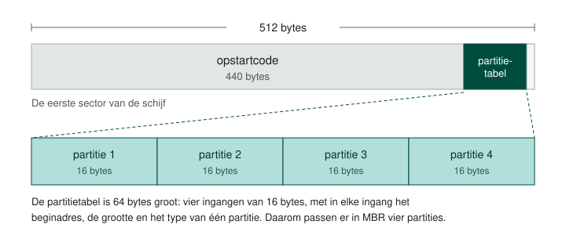
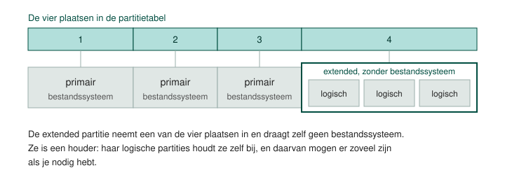
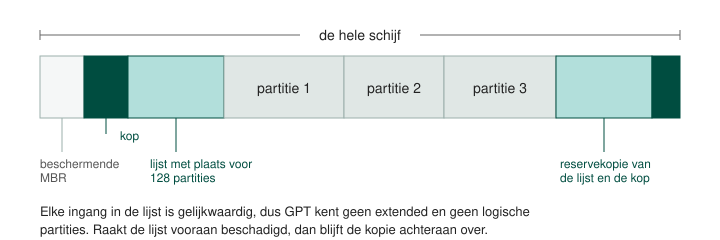
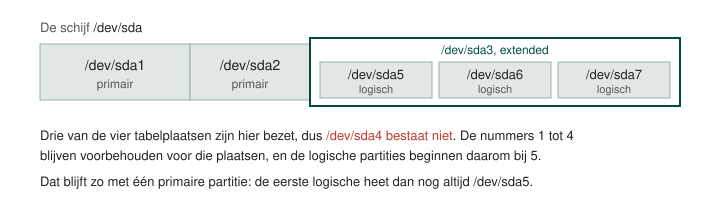

Partitietabellen
Een harde schijf die je uit de doos haalt is één aaneengesloten stuk opslagruimte. Voor een besturingssysteem er iets op kwijt kan, moet die ruimte verdeeld zijn in partities, en moet er ergens op de schijf staan hoe die verdeling eruitziet. Die lijst heet de partitietabel, en er zijn twee formaten in gebruik: MBR en GPT.
Partitioneren
Een partitie is een stuk aaneengesloten opslagruimte op een schijf of een USB-stick. Wie partitioneert, verdeelt één fysiek opslagmedium in stukken die het besturingssysteem elk als een aparte schijf behandelt. Op een medium dat je gebruikt staat altijd minstens één partitie.
Er zijn twee redenen om er meer dan één te maken. De eerste is het besturingssysteem en de data uit elkaar houden: staat je data op een eigen partitie, dan kan je de systeempartitie formatteren en het besturingssysteem opnieuw installeren zonder aan je bestanden te komen. De tweede is meerdere besturingssystemen naast elkaar zetten. Elk daarvan heeft zijn eigen partitie nodig, en vaak zelfs meerdere.

De partitietabel
De partitietabel staat vooraan op de schijf en somt op waar elke partitie begint, hoe groot ze is en van welk type ze is. De firmware van je computer leest die tabel om te weten waarvan ze kan opstarten, en het besturingssysteem leest ze om te weten welke opslagruimte het aan de gebruiker kan aanbieden.
Een schijf draagt één partitietabel, in één van beide formaten. Overschakelen van het ene naar het andere formaat betekent dat je de tabel opnieuw aanmaakt, en daarmee verdwijnt de verwijzing naar alles wat erop stond.
De data zelf blijft nog even in de sectoren staan, maar niets weet nog waar een bestand begint of eindigt. Kijk dus na op welke schijf je bezig bent voor je een partitietabel aanmaakt.
MBR
Het Master Boot Record is de eerste sector van de schijf, 512 bytes groot. Daarvan zijn 440 bytes voorbehouden voor opstartcode en 64 bytes voor de partitietabel. In die 64 bytes passen vier beschrijvingen van 16 bytes, en dat is de bekendste grens van dit formaat: vier partities, niet meer.

Een tweede grens zit in de manier waarop een sector geadresseerd wordt. MBR gebruikt daarvoor 32 bits, dus 232 sectoren van 512 bytes, en dat komt neer op ongeveer 2 TB. Een schijf die groter is, kan je met MBR niet volledig indelen.
MBR hoort bij het opstarten via BIOS. De opstartcode in die eerste sector verwijst naar de bootloader, en de bootloader start het besturingssysteem.
In GParted heet dit formaat msdos.
Primair, extended en logisch
Om met vier tabelplaatsen toch meer dan vier partities te maken, bestaat er een omweg. Eén van de vier plaatsen krijgt het type extended. Zo'n uitgebreide partitie draagt zelf geen bestandssysteem: ze is een houder waarin je logische partities aanmaakt, en die worden in de partitie zelf bijgehouden in plaats van in de tabel van 64 bytes. Het aantal logische partities is daardoor niet beperkt tot vier.
Op één schijf heb je dus twee mogelijke indelingen:
- Vier primaire partities
- Drie primaire partities, één extended partitie, en daarin zoveel logische partities als je nodig hebt

De tweede indeling kost je een primaire partitie, want de extended neemt er een tabelplaats van in. Er is ook hoogstens één extended partitie per schijf.
Zet Windows dus in een primaire partitie. Een Linux-distributie start ook op wanneer ze in een logische partitie staat, dus die zet je in de extended partitie wanneer je plaats tekort komt.
GPT
De GUID Partition Table is het formaat dat bij UEFI hoort. In plaats van één sector vooraan gebruikt GPT een kop met daarachter een lijst met plaats voor 128 partities, en die lijst staat een tweede keer achteraan op de schijf als reservekopie. Een sectoradres is hier 64 bits breed, waardoor de grens van 2 TB wegvalt.

Het onderscheid tussen primair, extended en logisch bestaat in GPT niet. Elke partitie in de lijst is gelijkwaardig, en GParted noemt ze allemaal primair. De omweg met een extended partitie heeft hier geen reden van bestaan: je maakt de partitie die je nodig hebt, tot de lijst vol is.
Een computer met UEFI-firmware heeft op de opstartschijf een aparte EFI-partitie staan.
Daarop staat een programma met de extensie .efi dat het besturingssysteem verder inlaadt. Bij
Windows is dat een van de systeemgereserveerde partities die je in Schijfbeheer zonder stationsletter ziet
staan.
Voor een schijf in een computer van vandaag is dat GPT: de firmware is UEFI, de schijf is mogelijk groter dan 2 TB en het aantal partities ligt niet vast op vier. MBR gebruik je waar het moet, bijvoorbeeld voor een medium dat ook op een ouder toestel met BIOS moet werken.
Hoe Linux een schijf en een partitie noemt
GParted draait op Linux, dus je ziet er de Linux-benamingen. De eerste schijf heet /dev/sda,
de tweede /dev/sdb, de derde /dev/sdc, en zo verder. De s komt van
de SCSI-interface, uit te spreken als scuzzie, waarmee Linux zowel PATA/IDE- als SATA-apparaten
aanspreekt.
De partities op een schijf krijgen een nummer achter die naam: /dev/sda1,
/dev/sda2. Bij een MBR-tabel zijn de nummers 1 tot 4 voorbehouden voor de vier tabelplaatsen,
dus voor de primaire partities en de extended. De logische partities beginnen daarom bij
/dev/sda5, ook wanneer er maar één primaire partitie voor staat.

GParted verzamelt je wijzigingen en voert ze pas uit wanneer je op Apply klikt. Tot dan staat er bij een nieuwe partitie nog geen nummer.